Geometry¶
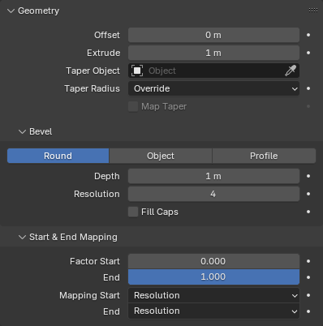
Panel Geometry.¶
Panel Geometry cho phép bạn biến một curve từ đường 1D thành dải ribbon 2D hoặc ống 3D.
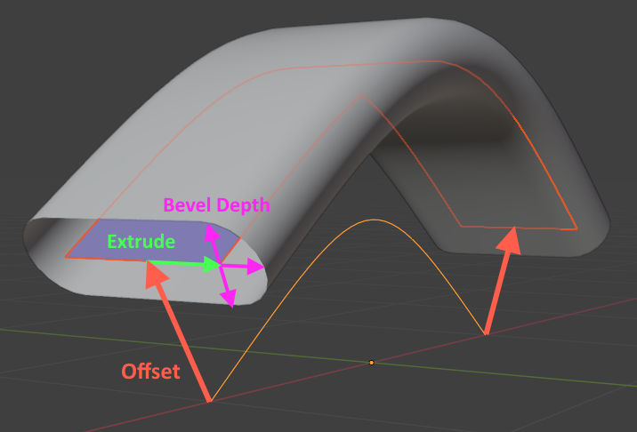
Ba bản sao của cùng một curve cơ sở: một bản không có geometry (đường màu cam sáng); một bản áp dụng Offset và Extrude (dải ribbon màu xanh dương); và một bản áp dụng Offset, Extrude và Bevel (ống màu xám).¶
- Offset
Di chuyển các điểm điều khiển dọc theo normals của chúng.
- Extrude
Biến curve từ một đường thành dải ribbon bằng cách extrude nó sang hai "bên": tại mỗi điểm, normal của curve được tính là hướng "lên trên", và curve được extrude sang "trái" và "phải".
Gợi ý
Bạn có thể tinh chỉnh hướng và khoảng cách của Offset và Extrude tại từng điểm điều khiển bằng cách thay đổi Tilt (xoay quanh trục tiếp tuyến) và Radius (hệ số scale) của nó.
- Taper Object
Một Curve object riêng biệt, gồm một spline 2D duy nhất không cyclic, dùng để điều khiển hệ số scale của geometry dọc theo chiều dài mỗi spline của curve.
Ghi chú
Chữ "taper" trong tên gọi này dễ gây hiểu lầm: từ này nghĩa là "giảm kích thước dần về phía cuối", trong khi Taper Object có thể áp dụng bất kỳ kích thước nào ở bất cứ đâu. Một cái tên đúng hơn có lẽ là "Scale Curve".
Cụ thể, Taper Object xác định một đồ thị trong đó trục X biểu diễn vị trí trên curve và trục Y biểu diễn hệ số scale:
Điểm điều khiển đầu tiên của spline Taper Object tương ứng với điểm điều khiển đầu tiên của từng spline geometry. Điều tương tự áp dụng cho các điểm cuối.
Điểm Taper đầu tiên nên có tọa độ X cao nhất, và điểm cuối có tọa độ X thấp nhất (hãy thử Switch Direction nếu việc scale có vẻ không hoạt động). Phạm vi tọa độ X cụ thể không quan trọng: nó có thể là [-10, 10], [-1, 1] hay bất kỳ giá trị nào khác.
Tọa độ Y bằng 1.0 giữ geometry không đổi. Tọa độ 0.5 làm nó nhỏ hơn một nửa, còn 2.0 làm nó lớn gấp đôi.
Tọa độ Z của các điểm điều khiển Taper Object bị bỏ qua, nhưng nếu muốn, bạn có thể đặt Shape của object thành "2D" để ép chúng về 0.
- Taper Radius
Cách kết hợp đồ thị scale của Taper Object với bán kính của các điểm điều khiển.
Ghi chú
Như trên, cài đặt này không chỉ giới hạn ở việc thon dần và cũng không xác định một bán kính duy nhất nào. Một cái tên đúng hơn có lẽ là "Scale Curve Mode".
- Override:
Taper Object (curve scale) ghi đè lên bán kính (scale) của các điểm điều khiển curve.
- Multiply:
Hệ số scale do Taper Object đưa ra được nhân với hệ số scale của các điểm điều khiển.
- Add:
Hệ số scale do Taper Object đưa ra được cộng vào hệ số scale của các điểm điều khiển.
- Map Taper
Nếu geometry chỉ được tạo cho một phần của curve (điều có thể đạt được bằng cách thay đổi Factor Start/End), việc bật Map Taper sẽ khiến các điểm cuối của Taper Object tương ứng với các điểm cuối của geometry thay vì của curve.
Bevel¶
Áp dụng Bevel để biến đường 1D (hoặc dải ribbon 2D khi dùng Extrude) thành một ống 3D.
Round¶
Tiết diện của ống trở thành hình tròn (hoặc hình viên thuốc khi dùng Extrude). Bạn cũng có thể thu được nửa hình tròn bằng cách thay đổi Fill Mode.
- Depth
Kích thước của tiết diện.
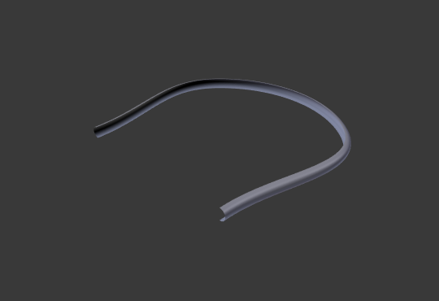
Depth nhỏ.¶
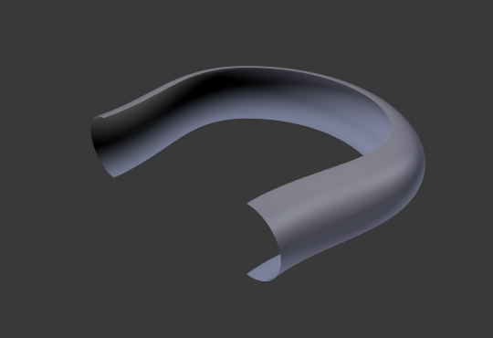
Depth lớn.¶


- Resolution
Quyết định số vertex trong tiết diện.
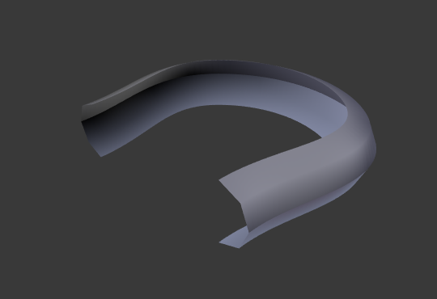
Resolution thấp cho ra mesh vuông vức.¶
Resolution cao cho ra mesh mượt.¶

- Fill Caps
Bịt kín hai đầu của ống.
Object¶
Tùy chọn này cho phép bạn tùy biến hoàn toàn hình dạng tiết diện bằng cách chọn một Curve object riêng.
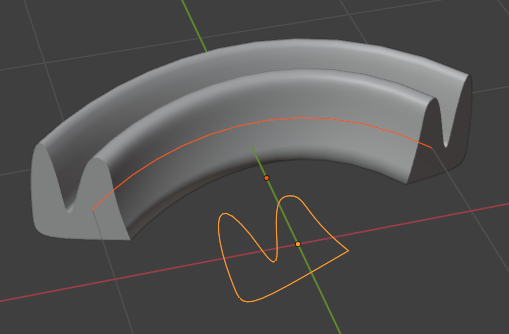
- Object
Curve xác định tiết diện. Nó có thể khép kín (cyclic) hoặc hở.
Quan trọng
Curve này nên phẳng trong mặt phẳng XY cục bộ của nó; dùng mặt phẳng khác sẽ không cho kết quả mong muốn.
Ghi chú
Nếu curve được chọn có modifier, các modifier đó sẽ không được tính đến. Bevel sẽ dùng hình dạng curve gốc. Điều này xảy ra vì curve được chuyển thành mesh nội bộ khi có modifier gắn trên nó, và đến lúc đó chúng không thể còn dùng làm curve tiết diện nữa.
Để khắc phục điều này, bạn có thể tắt bevel trên curve path, và thay vào đó thêm geometry nodes cho nó: lấy curve tiết diện bằng một Node Object Info, chuyển nó từ mesh trở lại thành curve bằng Mesh to Curve Node, cuối cùng truyền cả curve path lẫn curve tiết diện vào Node Curve to Mesh.
Profile¶
Tùy chọn này cho phép bạn tùy biến hình dạng tiết diện mà không cần tạo một Curve object riêng. Tuy nhiên, khác với tùy chọn Object nơi curve xác định toàn bộ tiết diện, Profile trong Widget Curve chỉ xác định một phần tư rồi được lặp lại và lấy đối xứng.
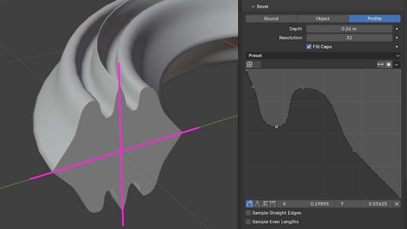
Các chấm đen trên profile biểu diễn những điểm được lấy mẫu (tức là nơi các vertex của mesh sẽ được tạo). Bạn có thể tăng Resolution để có nhiều điểm lấy mẫu hơn, nhờ đó kết quả mượt hơn.
- Preset
Bạn có thể chọn một trong các profile dựng sẵn thay vì tự tạo. Hai preset Support Loops và Steps được tạo động dựa trên Resolution và cần được áp dụng lại nếu bạn thay đổi nó.
- Reverse Path
Lấy đối xứng profile qua đường chéo.
- Toggle Profile Clipping
Giới hạn tọa độ X và Y của các điểm điều khiển trong khoảng [0, 1].
- Sample Straight Edges
Quyết định có lấy mẫu profile ở giữa các đoạn thẳng hoàn toàn (các đường thẳng nối hai điểm điều khiển có kiểu handle Vector) hay không. Tùy chọn này tắt theo mặc định, vì thông thường chỉ cần lấy mẫu profile tại chính các điểm điều khiển là đủ.
- Sample Even Lengths
Theo mặc định, mỗi đoạn profile nhận cùng một số điểm lấy mẫu. Khi bật tùy chọn này, các điểm lấy mẫu thay vào đó sẽ được phân bố đều dọc theo toàn bộ chiều dài của profile.
Start & End Mapping¶
- Factor Start, End
Tỷ lệ phần trăm dọc theo chiều dài curve nơi geometry bắt đầu và kết thúc. Mặc định hai giá trị này là 0 và 1, khiến geometry phủ toàn bộ chiều dài; nhưng nếu đổi thành 0.5 và 0.75, geometry sẽ chỉ phủ phần tư thứ ba của curve.
Một curve với Factor Start đặt là 0 và End là 1.¶
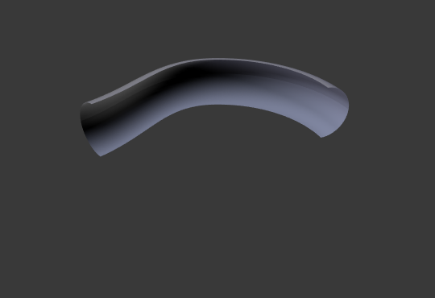
Factor End được đổi thành 0.6.¶

- Mapping Start, End
Cách ánh xạ các tỷ lệ phần trăm Factor Start, End thành vị trí trên curve.
- Resolution:
Chỉ đếm các điểm điều khiển, không quan tâm chiều dài của các đoạn spline (phần spline giữa hai điểm điều khiển). Nếu một spline có ba điểm điều khiển và Factor Start đặt là 0.5, geometry sẽ luôn bắt đầu tại điểm điều khiển thứ hai, dù khoảng cách từ nó đến điểm thứ nhất và điểm thứ ba hoàn toàn khác nhau.
- Segments:
Tính tỷ lệ phần trăm xấp xỉ dọc theo chiều dài spline bằng cách giả định rằng mọi sự phân chia bên trong mỗi đoạn đều được phân bố đều.
- Spline:
Tính tỷ lệ phần trăm chính xác dọc theo chiều dài spline.
Ví dụ¶
Curve 2D hở¶
Một curve hở (không cyclic) sau khi áp bevel trở thành một ống.

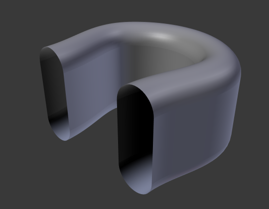
Curve 2D khép kín¶
Một curve khép kín (cyclic) sau khi áp bevel mặc định trở thành hình xuyến (torus). Nếu curve là 2D và bạn đặt Fill Mode thành Both, lỗ trên và lỗ dưới sẽ được bịt bằng các đĩa phẳng, và bạn sẽ nhận được một hình trụ với các cạnh bo tròn thay vào đó.

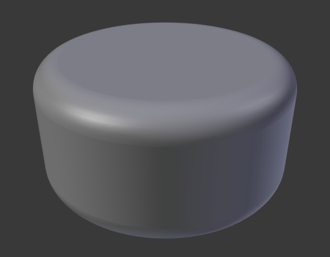
Điều này không hoạt động với curve 3D.
Taper¶
Bằng cách chọn một curve 2D làm Taper Object cho một curve khác (2D hoặc 3D), bạn có thể khiến bán kính geometry của curve sau thay đổi dọc theo chiều dài curve mà không cần tạo thêm điểm điều khiển.
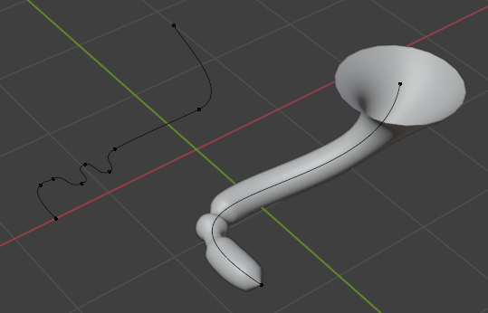
Tilt¶
Bạn có thể dùng công cụ Tilt để xoay một điểm điều khiển quanh trục tiếp tuyến của nó, tạo hiệu ứng xoắn trên curve. Ví dụ dưới đây cũng dùng một profile (tiết diện) tùy chỉnh.
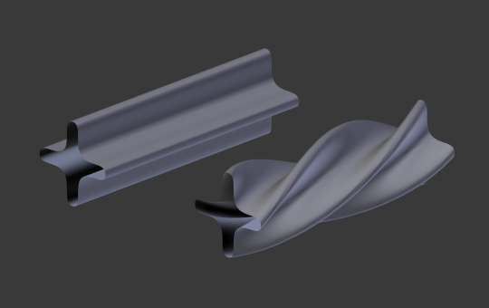